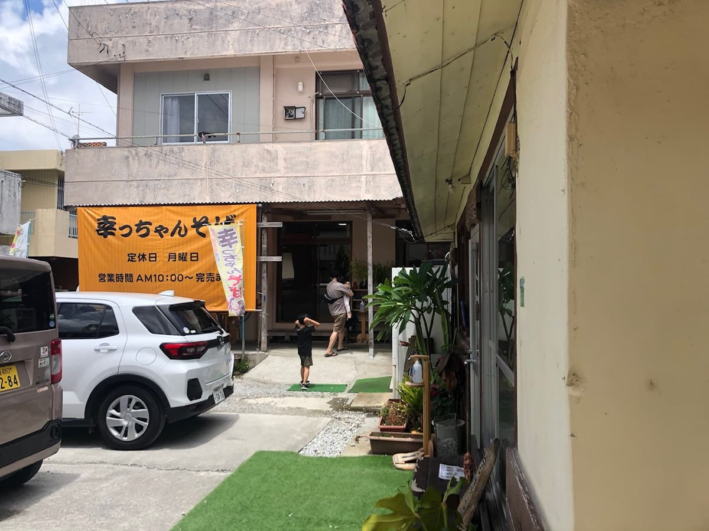
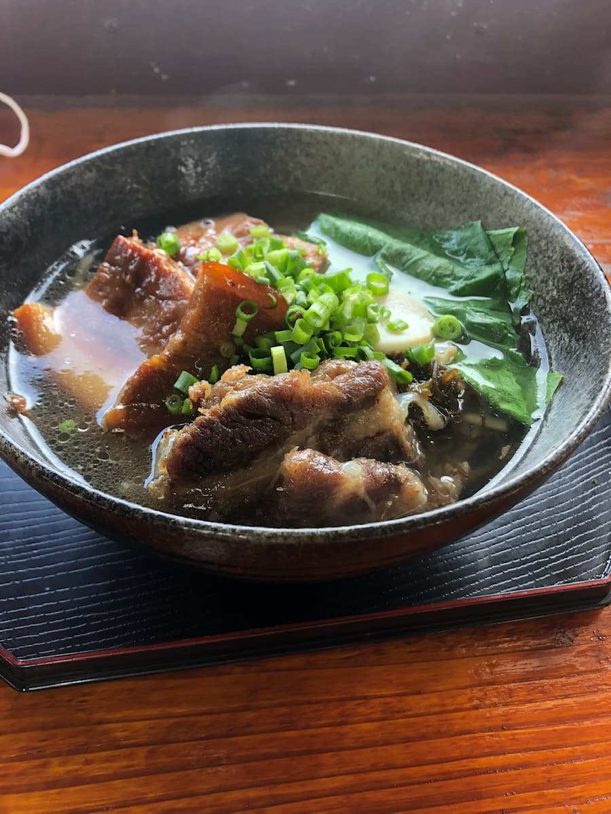

오키나와 소바 순례를 시작한 계기가 된 '나고시 소바 맵'에는 실려 있지 않지만, 현지 분의 추천을 받아 2022년 7월에 먹으러 갔습니다😄

가게 이름과 같은 이름의 '삿짱 소바'를 주문

모즈쿠(큰실말)를 반죽에 넣은 스트레이트 면은 다른 가게에는 없네요☺ 국물은 담백한 가쓰오 육수였습니다. 고기는 삼겹살 조림(산마이니쿠), 돼지갈비(소키), 연골 돼지갈비(난코츠 소키)까지 여러 종류를 맛볼 수 있어서 맛있어요😋 손님은 현지 분들이 많아서 지역에서 사랑받는 가게라는 걸 알 수 있습니다.
평가(9점/15점): 현지 분의 추천도 있었고, 맛있었습니다. 게다가 우연히도 제가 먹고 난 뒤인 2022년 8월 28일에 '바나나맨의 셋카쿠 구루메(나고시 편)'에서도 소개되어 인기가 있다는 걸 알게 되었습니다. 어쩌면 TV 방송 덕분에 관광객 분들도 늘었을지 모르지만 꼭 한번 드셔 보세요.
면: ★★★☆☆（3）
수프: ★★★☆☆（3）
토핑: ★★★☆☆（3）